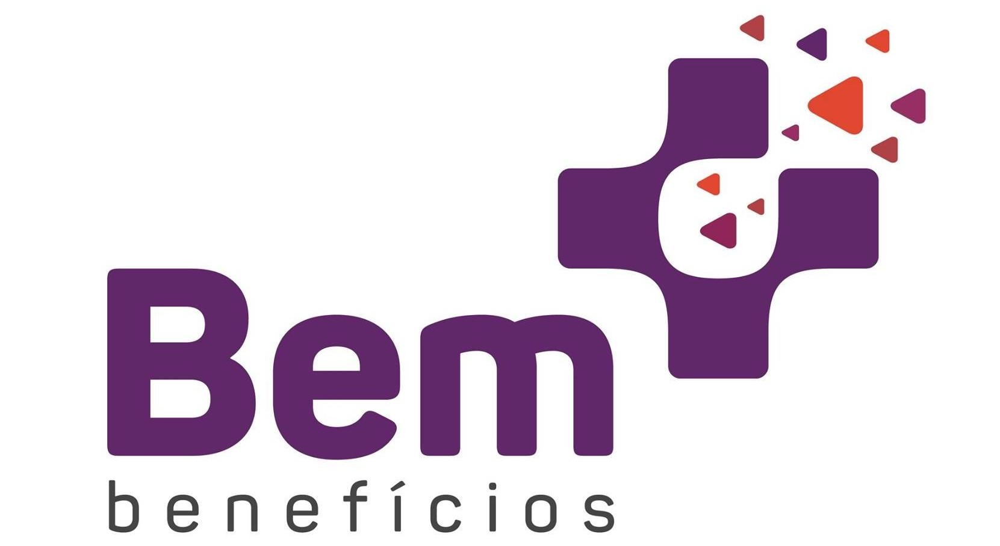
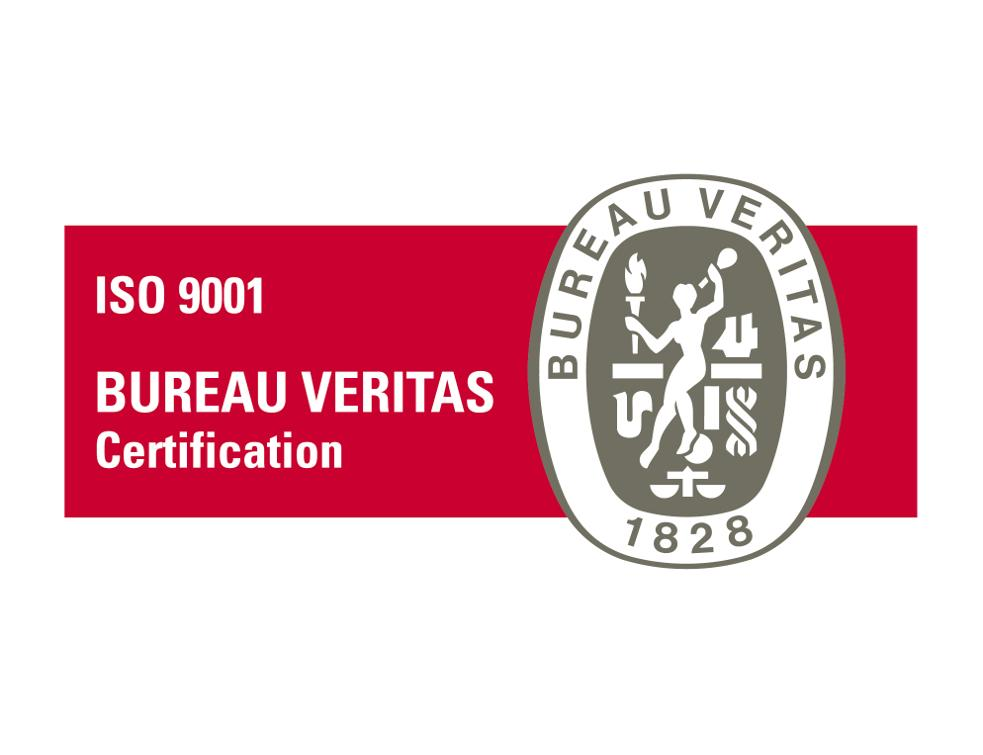
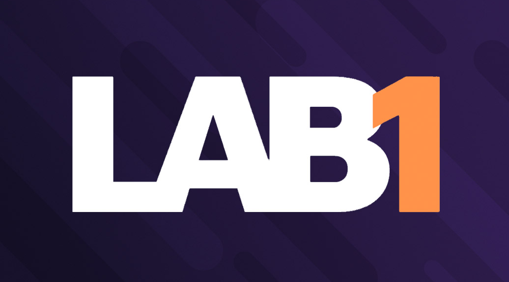
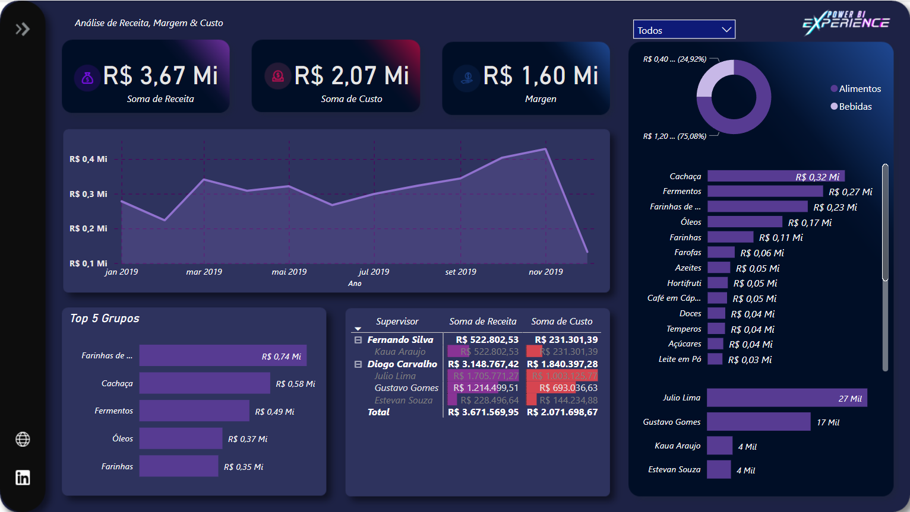
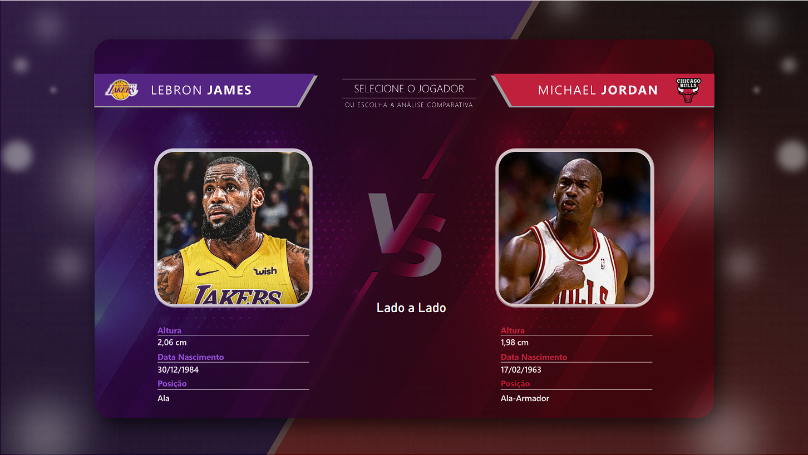

Especialista em transformar dados brutos em insights estratégicos. Experiência robusta em ecossistemas Cloud (AWS/Azure), Modelagem de Dados, Power BI e automação de processos.
Sou formado em Análise e Desenvolvimento de Sistemas e atualmente pós-graduando em Arquitetura e Governança de Dados.
Com experiência sólida na área de Business Intelligence, venho atuando com foco na análise e visualização de dados para apoiar decisões estratégicas em ambientes corporativos. Minha trajetória é marcada pelo desenvolvimento de dashboards interativos, orquestração de pipelines de dados em nuvem e automação de processos críticos.
Busco constantemente me aprimorar e contribuir com soluções inovadoras e eficientes, unindo formação acadêmica com experiência prática para agregar valor real ao negócio.
Anos de Experiência
Projetos Entregues

Atuação em todo o ciclo de vida do dado no ecossistema AWS. Orquestração de pipelines com AWS Glue, estruturação de Data Lakes em S3 e consultas ad-hoc via Athena. Desenvolvimento de dashboards estratégicos em QuickSight.

Otimização de processos corporativos. Desenvolvimento de dashboards em Power BI e soluções de automação complexas utilizando a suíte Power Platform (Power Apps e Power Automate).
Expertise em modelagem e transformação de dados com DAX no Power BI. Desenvolvimento de scripts Python para extração de dados via APIs. Automação de processos com Power Automate.
Desenvolvimento de relatórios complexos em SQL Server. Gestão de permissões, análise de dados do TOTVS RM e automação de rotinas de RH e obrigações fiscais.

Desenvolvimento de Add-ons para SAP Business One em C#. Manutenção de websites integrados ao SAP utilizando ASP.NET e SQL Server.

Dashboard desenvolvido no Power BI para oferecer uma visão clara da margem de lucro, analisando receitas e custos para identificar oportunidades de otimização.
Visualizar Relatório
Análise estatística detalhada das carreiras de Michael Jordan e LeBron James. Comparativo temporada a temporada criado do zero para insights no basquete.
Visualizar RelatórioEstou aberto a novas oportunidades e parcerias. Sinta-se à vontade para entrar em contato comigo!
Enviar Mensagem